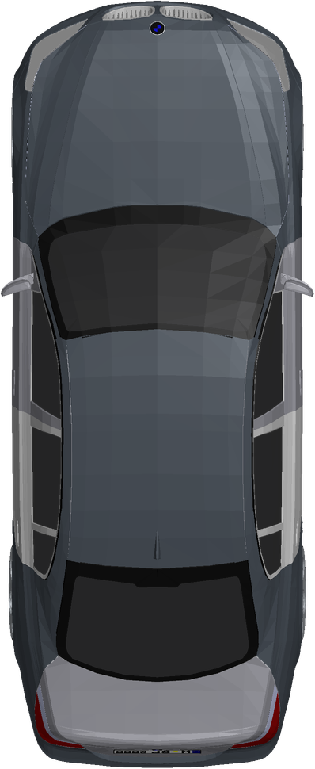

近光遠光霧燈
手煞車安全帶
車身

等 360 送偵測結果
車機連上、360 背景偵測開著才有。也可以到「車機」頁開示範看看。
手機定位
分享手機 GPS 給車機
中控台導航、360 地圖（路名、速限）都會優先用手機的
遠端控制（亮波雲端）
用你的亮波帳號登入一次，之後手機就能直接遠端控車、看車況——車熄火、不在車上也能用。憑證只存在這支手機。
遠端 AI（MCP）
讓 AI 透過這支手機看車況
到 car-mcp.vito1317.com 用 Passkey 登入 →「新增裝置」拿配對碼。AI 只能看車況、360、設定導航，不能控制車子。
車機
配件
沒有資料
示範
示範模式
沒連車機時用假資料看看各頁長怎樣
連線
車機連上這支手機的熱點後會自動找到（中控台 1.8 以上）。